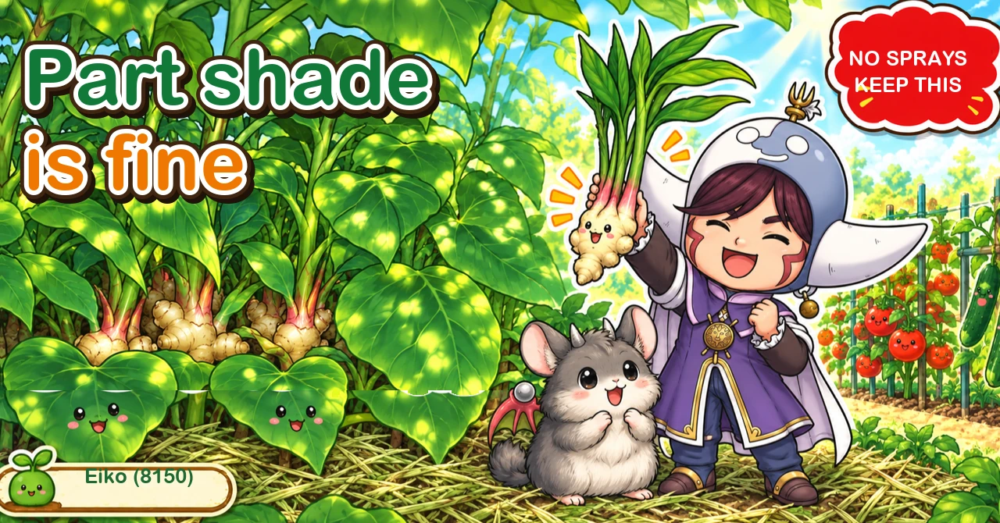
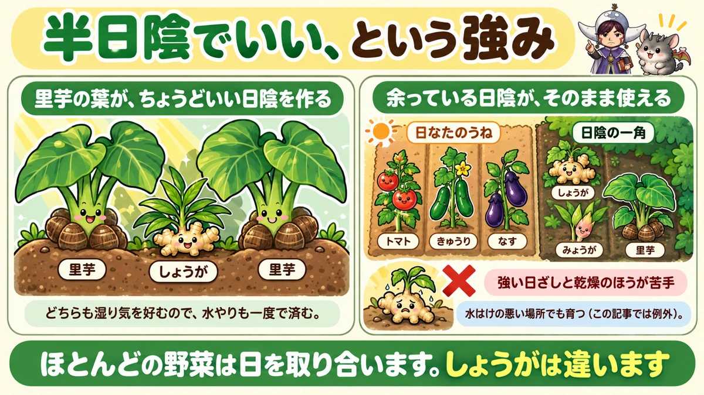
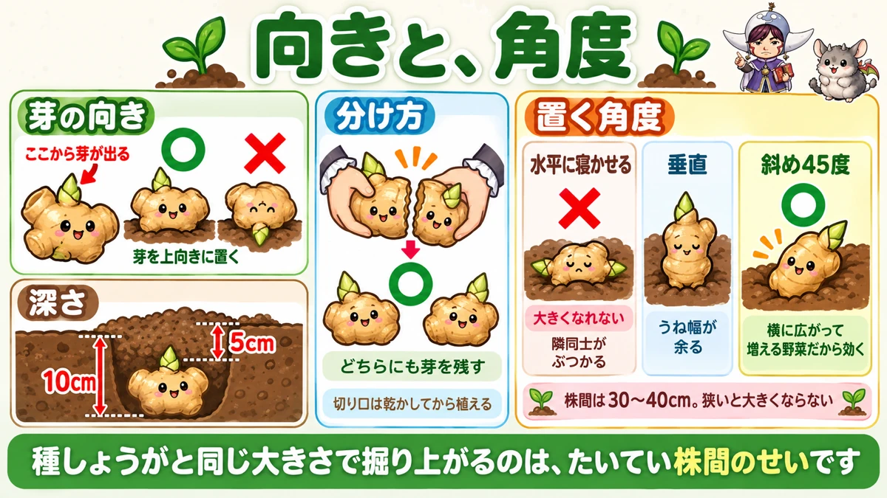
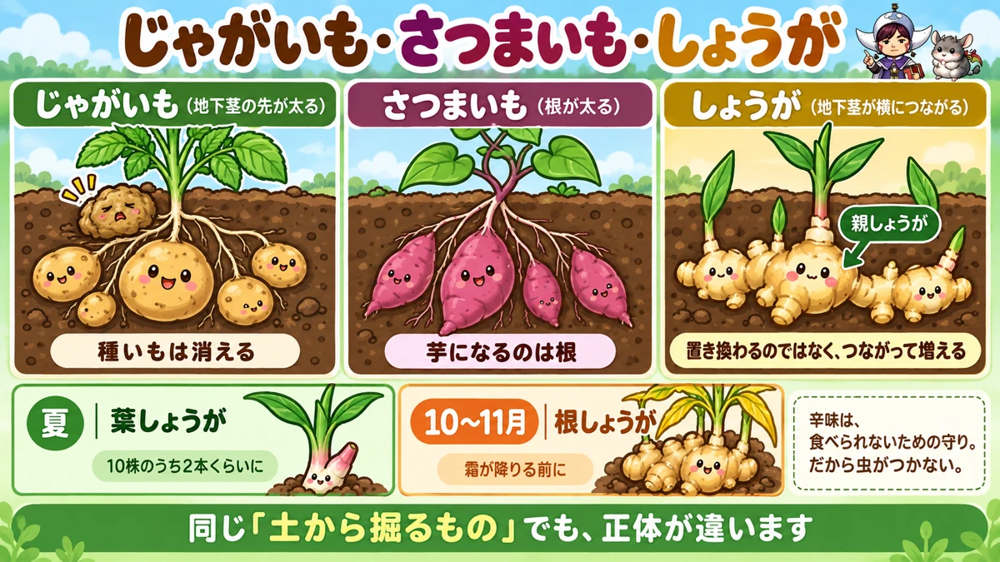

Ginger gives you a harvest in midsummer too 🌱 And it wants part shade

🌱 "I have a shaded patch I can't use for anything."
🌱 "I planted it and dug up something the same size as what I put in."
🌱 "Waiting until autumn with nothing to show is hard."
Hello, I'm Eiko. Eight years of growing vegetables organically and without pesticides, and a teaching licence in science.
Ginger is one of the best-value crops in a home garden, for three reasons:
- part shade is fine
- almost nothing eats it
- you get a harvest in midsummer, partway through
The point, up front:
The spot that doesn't get the light is ginger's seat 🌱
The basics
- Family: ginger family — it shares a family with nothing else you grow
- Plant: late spring, once the nights are reliably mild
- Harvest: young ginger in midsummer, mature rhizomes in autumn
Seed ginger is only on sale briefly
It appears in shops for about a month in spring and then it's gone. Buy it when you see it.
But don't plant it immediately — early spring nights are still cold. Wait until the nights are properly mild.
Soil
Per square metre: well-rotted manure, 150 ml of poultry manure and 100 ml of oilseed meal, dug in thoroughly before making the bed.
Part shade is a real advantage

What this diagram says （図解の文字）
- Part shade is an advantage
- Taro leaves make exactly the right shade — taro ／ ginger ／ taro
- Both like it damp, so one watering does both
- The shade you had spare is now usable
- The sunny beds — tomatoes, cucumbers…
Every garden runs into the same problem: there isn't enough good ground. Tomatoes, aubergines and cucumbers all want sun, and the north side and the shade of buildings go spare.
Ginger grows there. More precisely, what it dislikes is strong sun and dryness.
The shade you had spare is ginger's seat.
Pair it with taro
Particularly recommended: plant ginger between taro plants.
Taro's big leaves give ginger exactly the shade it wants, and both like damp soil, so one watering serves both.
Poor drainage is acceptable too
Everywhere else the advice is free-draining beds. Ginger is the exception — it grows in ground that holds water. If you have a damp corner, that's a candidate.
Orientation and angle

What this diagram says （図解の文字）
- Orientation, and angle
- Which way the buds face — the shoots come from here ○ × — place it bud side up
- Depth — 10 cm ／ 5 cm
- Dividing — leave buds on both pieces ○ — let the cut dry before planting
- The angle to lay it — flat along the bed × — it can't grow; neighbours collide ／ upright…
Buds up
Look at a piece of seed ginger and you'll see knobbly protrusions on the surface. The shoots come from those.
So put the protrusions upward. Planted upside down, the shoots have to come round and emerge late.
Depth
- Dig about 10 cm
- Cover with about 5 cm of soil, lightly firmed
Don't skimp on spacing
30–40 cm between plants.
Too close and they don't bulk up. "I dug up something the same size as the piece I planted" is almost always this. Too wide is never a problem.
Break up large pieces
You don't need to plant a big lump whole. If it has two or more buds, break it by hand.
The only rule: leave buds on both pieces. And let the broken surfaces dry before planting.
Lay it at 45° to the bed
A genuinely useful trick: place each piece at 45° across the bed.
- laid flat along the bed, neighbours collide and nothing can expand
- laid straight across, the bed's width is wasted
- at 45°, you use the whole width
Ginger expands sideways as it multiplies, so the angle matters.
Summer care: don't let it dry out
Earth up
Once the shoots are 10–15 cm, draw soil up. With mulch down, drawing it over the top is fine.
Feed once
At about 30 cm tall, the first feed:
- 20 cm out from the plant
- about 20 ml of poultry manure per spot
- two spots, one each side
Don't put it at the base — the roots are already out beyond it.
And mulch with cut grass
In practice this is the whole job: don't let it dry out.
Lay cut grass or pulled weeds over the bed. It holds moisture and lowers soil temperature in high summer.
I cut the paths each year and put the cuttings straight onto the ginger bed. Something that was waste does the work.
Pests barely come
Ginger gets almost no insect damage and little disease. Plant it, earth it up, mulch it, water when dry — and that carries it to autumn.
A harvest in midsummer
You don't have to wait for autumn, which is the enjoyable part. In summer, pull one whole young plant.
That's young ginger — the white base eaten with miso. Tender, strongly aromatic, and surprisingly expensive to buy.
Obviously a pulled plant is finished, so take one in every few. I take two from ten.
The main harvest comes in autumn, when the leaves yellow. Lift before the first frost.
The science: the seed piece doesn't disappear 🔬

What this diagram says （図解の文字）
- Potato, sweet potato, ginger
- Potato (the tip of an underground stem swells) — the seed potato disappears
- Sweet potato (a root swells) — what becomes the tuber is a root
- Ginger (the underground stem extends sideways) — the parent ginger
- It doesn't replace itself; it connects and multiplies
Dig potatoes and the seed potato you planted is a shrivelled husk — it spent itself into the new tubers.
Ginger is different. Lift it and the piece you planted is still there, with the new ginger attached to it in one connected mass. That's the parent ginger — hard, and edible.
Why
- Potato — the tip of an underground stem swells into a new tuber
- Ginger — the underground stem itself extends sideways
Ginger doesn't replace itself. It connects and multiplies.
Three crops side by side
- Potato — a swollen underground stem; the seed disappears
- Sweet potato — a swollen root
- Ginger — an underground stem extended sideways; the seed piece remains
All "things you dig up", and all three are different things.
And the heat has a purpose
Ginger is pungent as a defence against being eaten. Which is why insects leave it alone — the reason it's an easy no-spray crop is the pungency itself.
The aroma when you lift it is the same thing: a compound made for protection, which we happen to find delicious ☺️
To sum up
- ✅ Ginger family — it clashes with nothing in your rotation
- ✅ Seed ginger is only sold briefly; buy it when you see it
- ✅ Plant once nights are mild
- ✅ Part shade suits it; strong sun and dryness don't
- ✅ Plant it between taro — shade and watering both solved
- ✅ Poor drainage is acceptable, unusually
- ✅ Buds up, 10 cm hole, 5 cm covering
- ✅ 30–40 cm spacing — too close is why it stays small
- ✅ Break large pieces leaving buds on both, and dry the cuts
- ✅ Lay each piece at 45° to use the bed's width
- ✅ Earth up at 10–15 cm; feed once at 30 cm, 20 cm out
- ✅ Mulch with cut grass; the job is not letting it dry
- ✅ Take one young plant in every few in summer
- ✅ The seed piece survives, because the stem extends rather than replaces
You don't have to do all of it. Think of the shadiest, dampest corner you have. That's where the ginger goes 🌱
Thank you for reading!